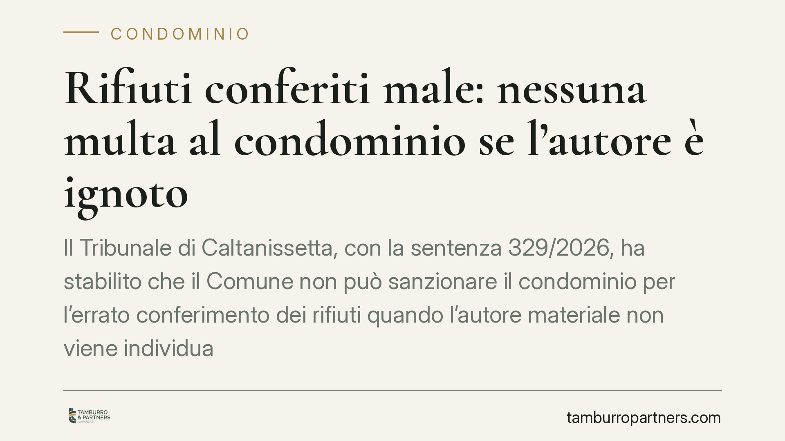

Rifiuti conferiti male: nessuna multa al condominio se l'autore è ignoto
Il Tribunale di Caltanissetta, con la sentenza 329/2026, ha stabilito che il Comune non può sanzionare il condominio per l'errato conferimento dei rifiuti quando l'autore materiale non viene individuato. Non basta il possesso dei mastelli ricevuti in comodato: serve una responsabilità personale e accertata. Una pronuncia che incide sul rapporto tra enti locali, amministratori e residenti.

Il caso
Un Comune aveva notificato una sanzione al condominio per un conferimento dei rifiuti non conforme alle regole della raccolta differenziata. Il presupposto era semplice quanto discutibile: i mastelli erano stati assegnati al condominio in comodato d'uso, quindi il condominio stesso ne rispondeva. L'autore materiale dell'errore, però, non era mai stato individuato.
Il Tribunale di Caltanissetta ha annullato la sanzione. Il principio affermato è netto: senza l'individuazione di chi ha concretamente commesso la violazione, non si può punire il condominio in quanto tale.
Inquadramento normativo
La decisione poggia sui principi generali della legge sulle sanzioni amministrative, la L. 689/1981.
L'art. 3 richiede l'elemento soggettivo: la responsabilità per un illecito amministrativo presuppone una condotta, almeno colposa, riferibile a una persona determinata. Non esiste, nel nostro ordinamento, una responsabilità automatica per il solo fatto di detenere un bene.
L'art. 6 disciplina la responsabilità solidale: chiamano a rispondere il proprietario della cosa che è servita a commettere la violazione, ma solo in solido con l'autore materiale. In altre parole, la solidarietà presuppone che un autore ci sia e sia identificato. Se manca l'autore, viene meno anche l'aggancio su cui costruire la pretesa verso il condominio.
Il Tribunale ha quindi escluso ogni forma di responsabilità oggettiva legata al mero possesso dei mastelli. Il comodato d'uso attribuisce la detenzione dei contenitori, non trasforma il condominio in garante di ogni comportamento scorretto dei residenti o di terzi.
Implicazioni pratiche
La pronuncia ha un effetto concreto sulla prassi di molti enti locali, che tendono a notificare la sanzione direttamente al condominio o all'amministratore, sul presupposto che i mastelli siano "intestati" allo stabile.
Questo approccio, alla luce della sentenza, è fragile. Il Comune ha l'onere di dimostrare chi ha conferito male i rifiuti. Non può limitarsi a constatare l'irregolarità e a risalire al condominio tramite il codice del mastello o la targhetta.
Per l'amministratore cambia la prospettiva difensiva. Ricevere un verbale non significa doverlo pagare: se nell'atto non è indicato l'autore materiale della violazione, la sanzione è contestabile.
Attenzione però a un punto. La decisione è di merito e riguarda un caso specifico. Non equivale a un via libera generalizzato: se il Comune individua l'autore o se il regolamento comunale prevede obblighi di vigilanza specifici e correttamente contestati, lo scenario può essere diverso. Ogni verbale va valutato per il suo contenuto concreto.
Cosa fare in concreto
- Leggere con attenzione il verbale: verificare se indica l'autore materiale della violazione o se si limita a richiamare il possesso dei mastelli in comodato.
- Rispettare i termini: l'opposizione all'ordinanza-ingiunzione ha scadenze precise. Consigliamo di segnare subito la data di notifica e non attendere l'ultimo giorno.
- Conservare la documentazione sul comodato d'uso dei contenitori e sul regolamento comunale di raccolta, utili a ricostruire gli obblighi effettivi.
- Convocare, quando opportuno, l'assemblea per informare i condomini e definire la linea da tenere, evitando pagamenti affrettati di sanzioni contestabili.
- Valutare l'opposizione con un professionista prima di decidere se pagare o impugnare: l'esito dipende dal contenuto specifico dell'atto.
Una riflessione sulla prevenzione
Il tema non è solo difensivo. Un conferimento scorretto ripetuto genera tensioni interne e costi. Dotarsi di regole condominiali chiare sull'uso dei mastelli, di cartellonistica e, dove possibile, di sistemi di identificazione del conferimento aiuta a prevenire sia le irregolarità sia le contestazioni. La sentenza tutela il condominio dalla responsabilità automatica, ma non elimina l'interesse collettivo a una gestione ordinata dei rifiuti.
Disclaimer
Contributo informativo a cura di Tamburro & Partners - Avv. Giuseppe Tamburro. Non costituisce parere legale.
Ogni condominio ha una storia a sé.
Se gestisci un'amministrazione e vuoi un confronto su una specifica questione condominiale, scrivi allo studio. Ti rispondiamo entro un giorno lavorativo.